Celest mekanik
Solsystemet - Astronomi C
Vibenhus Gymnasium
Hvordan kan himmellegemers bevægelser beskrives?
Aristoteles (384 f.Kr. - 322 f.Kr.)
Cirkelbevægelser!

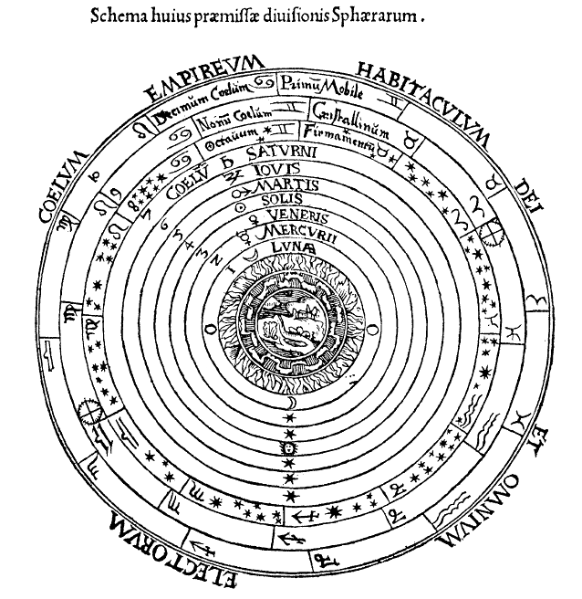
Jævn cirkelbevægelse
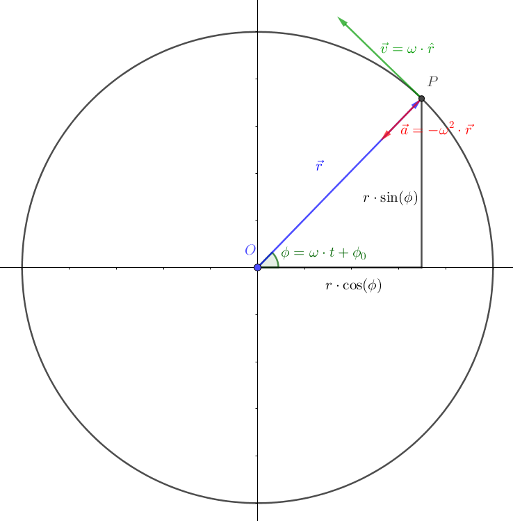
Position
Opskrevet som vektorfunktion.
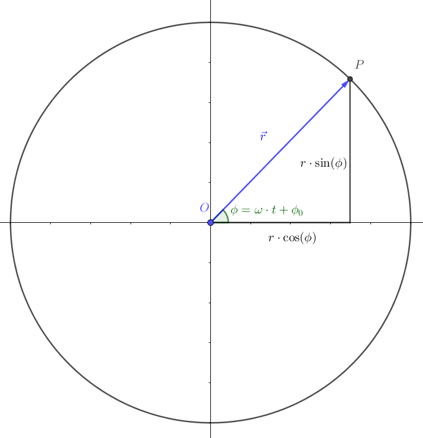
Hastighed
Hastigheden findes ved at differentiere positionen mht tiden
\[\boxed{\vec{v} (t) = \omega \cdot \hat{r}}\]
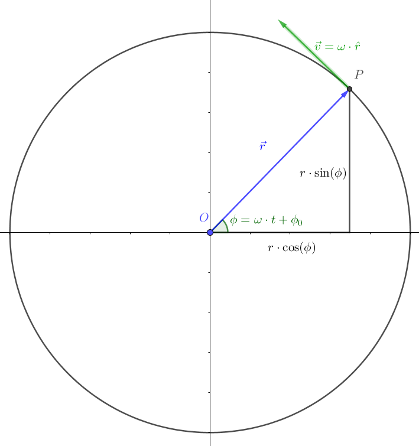
\[\boxed{\vec{v} (t) = \omega \cdot \hat{r}}\]
- Hastigheden er vinkelret på radius.
- Hastigheden er tangentiel til bevægelsen.
Acceleration
Accelerationen findes ved at differentiere hastigheden mht tiden
\[\boxed{\vec{a} (t) =- \omega^2 \cdot \vec{r}}\]
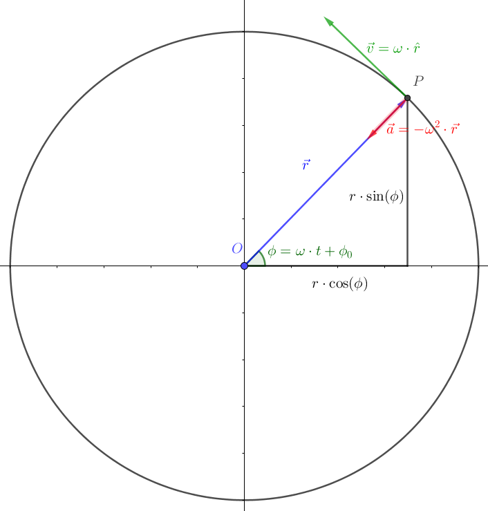
\[\boxed{\vec{a} (t) =- \omega^2 \cdot \vec{r}}\]
- Accelerationen vender modsat positionen.
- Accelerationen peger altid mod centrum.
Centripetalkraft
Centersøgende acceleration kaldes centripetalaccelerationen. Det en den røde vektor på figuren.
centripetalkraften findes vha. Newtons 2. lov:
\[\vec{F}_{res} = m \cdot \vec{a}_{cen} = - m \cdot \omega^2 \cdot \vec{r}\]
For jævn cirkelbevægelse er:
- \(\vec{F}_{res} = \vec{F}_{cen}\) og
- \(a_{cen}= \omega^2 \cdot r = \frac{v^2}{r}\) (de sidste her er kun størrelsen på accelerationen. Retningen er ikke medtaget.)
Diverse formler til jævn cirkelbevægelse
- \(f\) er frekvensen (omløb pr. s.)
- \(T\) er omløbstiden/perioden
- \(\omega\) er vinkelhastigheden
- \(\phi\) er tilbagelagt vinkel (i rad)
- \(v\) er translatorisk hastighed (periferihastighed)
- \(a_{cen}\) er (centripetal)acceleration
Opgaver om jævne cirkelbevægelser
En cykel (og en bil)
Hvor hurtigt drejer hjulene rundt?
Hvilke oplysninger har I brug for?
- En formel med en forklaring?
- Vinkler, grader og radianer?
- Størrelsen på hjulene?
- Omdrejninger pr. sekund?
Vindmølle
Hvad er vingespidsernes fart?
Hvilke oplysninger har I brug for?
- Rotationshastighed(vinkelhastighed)?
- Vingernes størrelse?
Satellit i geostationær bane
Hvor højt ligger en geostationær satellit over Jordens overflade?
Hvilke oplysninger har I brug for?
- Noget baggrundsviden?
- Nogle oplysninger om Jorden?
- Nogle oplysninger om satellitten?
Newtons gravitationslov
(Kronologien passer ikke helt :) )
- Jorden trækker lige så meget i Månen, som Månen trækker i Jorden.
- Kraften de begge trækker med er
\[\boxed{F_G = G \cdot \frac{M \cdot m}{r^2}\,,}\]
- hvor \(G= 6.67 \cdot 10^{-11} Nm^2/kg^2\) (kaldet Newtons gravitationskonstant),
- \(M\) er massen af det store objekt,
- \(m\) er massen af det lille,
- \(r\) er afstanden mellem de to objekter.
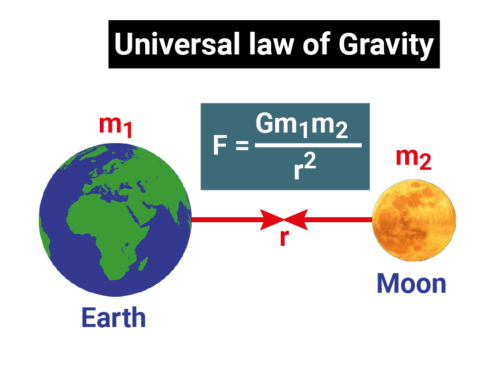
Klaudius Ptolemæus (ca. 100 e.Kr - ca. 170 e.Kr)
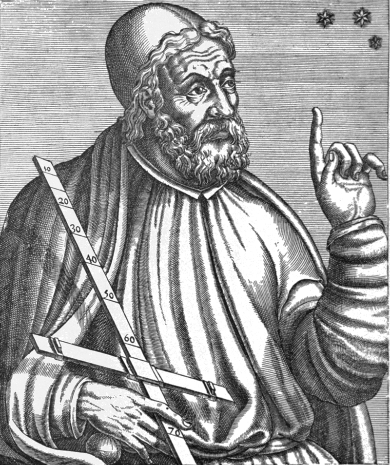
- Alle himmellegemebevægelser foregår vha cirkler.
- Vilkårlige bevægelser kan beskrives vha epicirkler.
Leg med epicirkler
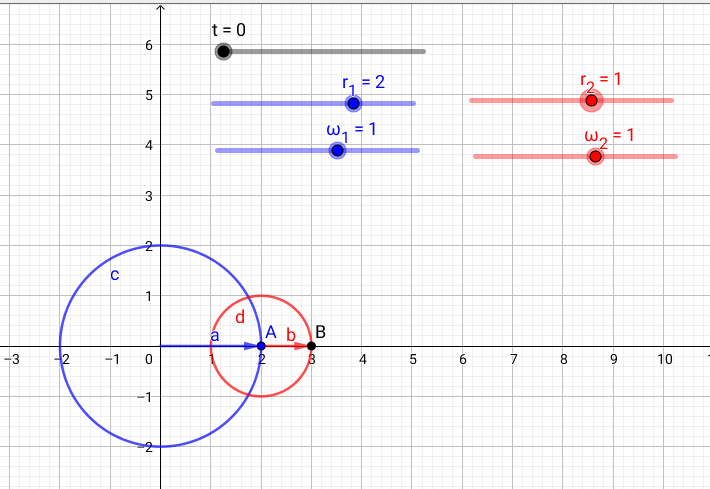
Epicirkler kan beskrive et geocentrisk verdensbillede
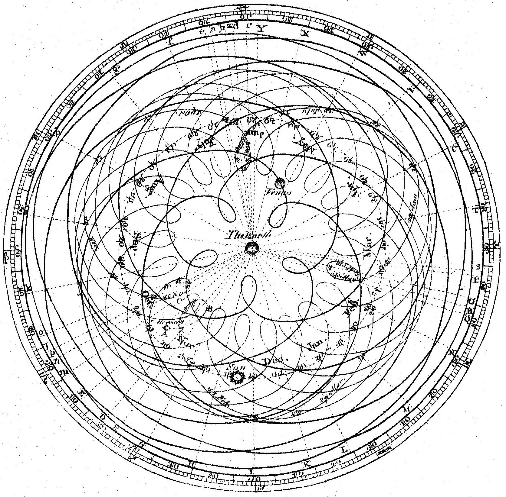
Hvad er der så egentlig galt med dem?
De kan beskrive hvad som helst!
Linket er https://youtu.be/QVuU2YCwHjw
Johannes Kepler (1571 - 1630)

- Tycho Brahes lærling.
- Analyserede Tycho Brahes opmålinger (de bedste i verden for sin tid).
- Der må være en smartere forklaring end epicirkler.
Keplers 1. lov
"Planeterne bevæger sig i ellipsebaner omkring Solen således, at Solen befinder sig i det ene brændpunkt."
(Figuren viser ikke de forskellige planetbaner, men forskellige eksempler på ellipsebaner.)

Keplers 2. lov
"Det af radiusvektor pr. tidsenhed overstrøgne areal er konstant"
- En planet er lige lang tid om at bevæge sig strækningerne AB, CD og EF.
- De tre skraverede arealer er lige store.
- En planet bevæger sig langsomt, langt væk fra Solen, og hurtigt tæt ved Solen.
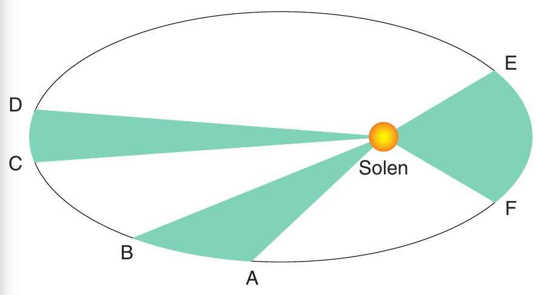
Keplers 3. lov
Denne ligning gælder for alle himmellegemer, som kredser om et centrallegeme.
- Hvis man først har bestemt konstanten for én planet, så er det den samme konstant for alle andre planeter, som kredser om samme centrallegeme.
For Jorden og vores solsystem gælder:
\[\frac{T^2}{a^3} = \frac{(1 \text{ jordår})^2}{(1 \,AE)^3}\]
- De samme enheder kan bruges for alle andre planeter, asteroider, kometer, etc., som kredser om Solen.
Ellipser og ellipsebaner
- Fladtrykte cirkler. (Eller faktisk er cirklen et særtilfælde af en ellipse)
- Har 2 brændpunkter(fokuspunkter), \(F_1\) og \(F_2\).
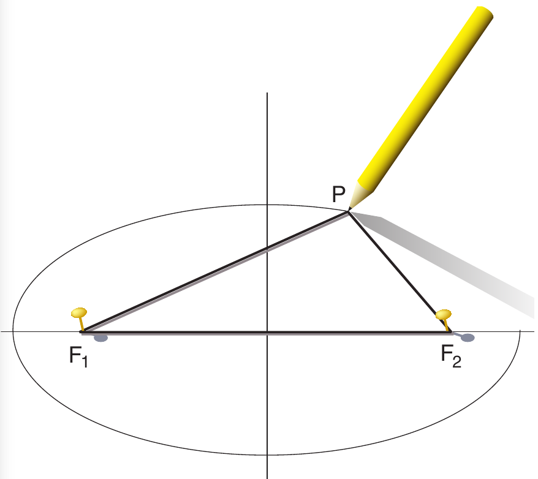
Matematiske sammenhænge
- \(\left| F_1 P \right| + \left| F_2 P \right| = \text{konstant} = 2 \cdot a\)
- \(\left( \frac{x}{a} \right)^2 + \left( \frac{y}{b} \right)^2 =1\)
Forklaringer
- 2a = storaksen, eller mere almindeligt: a er den halve storakse
- 2b = lilleaksen, eller mere almindeligt: b er den halve lilleakse
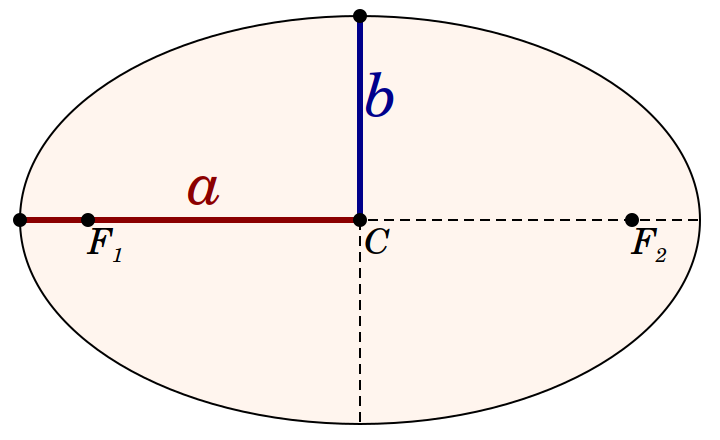
Aphel og perihel er henholdsvis positionen med den største og mindste afstand til solen (det ene brændpunkt). Aphelafstanden benævnes \(r_a\) mens perihelafstanden benævnes \(r_p\).
Huskeregel: Tænk på at A phel og A way hører sammen.
Excentricitet, e
- Sammentrykkethed
- \(0\leq e < 1\) for en generel ellipse
- \(e = 0\) for en cirkel
Sammenhænge
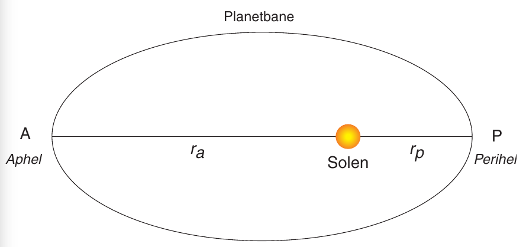
Hastigheder
\[v_a\cdot r_a = v_p\cdot r_p\]
\(v_a\) og \(v_p\) er hhv hastighederne i hhv aphel og perihel.
(Kommer fra Keplers 2. lov og gælder kun i disse to punkter.)
Keplers love, ellipser og Halleys komet
Oplysninger:
- Perihelafstand, \(r_p = 0.6 \,AE\)
- Aphelafstand, \(r_a = 35.3 \,AE\)
- Perihelhastigheden, \(v_p = 194 000 km/h\)
Opgaver:
- Bestem banens excentricitet, \(e\)
- Bestem den halve storakse, \(a\)
- Beregn omløbstiden, \(T\)
- Beregn aphelhastigheden, \(v_a\)

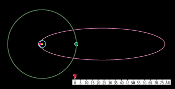 J, S , H
Banens excentricitet
Husk at e=0 er en cirkel, så Halleys komets bane er meget langt fra at være en cirkel.
Banens halve storakse, a
Omløbstiden, T
Anvender Keplers 3. lov
\[\frac{T^2}{a^3} = \frac{\left(1 \text{ jordår}\right)^2}{\left( 1 \,AE \right)^3}\]
Kender den halve storakse i AE, så dette indsættes og \(T\) isoleres. Resultatet kommer ud i jordår.
Aphelhastigheden, \(v_a\)
Opgaver fra DLU
Opgave 6.1
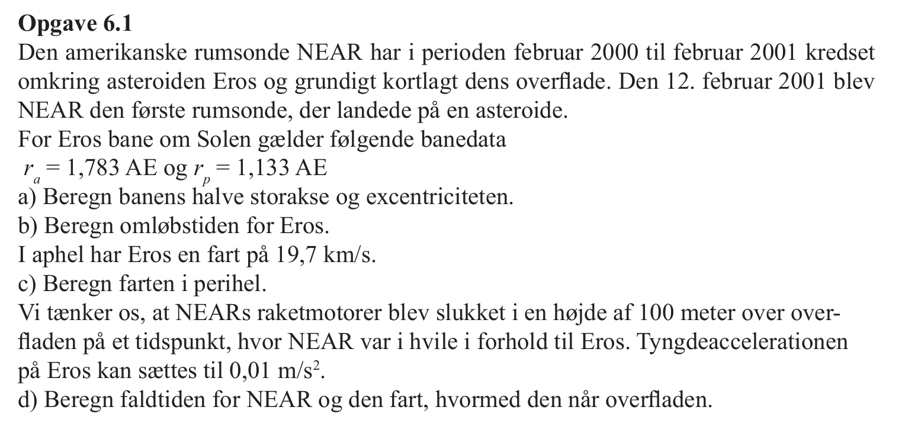
Opgave 6.2
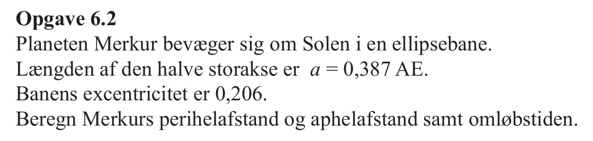
Opgave 6.3
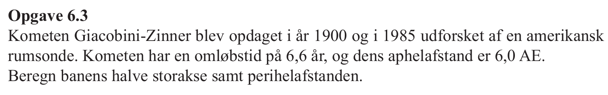
Merkurs bane
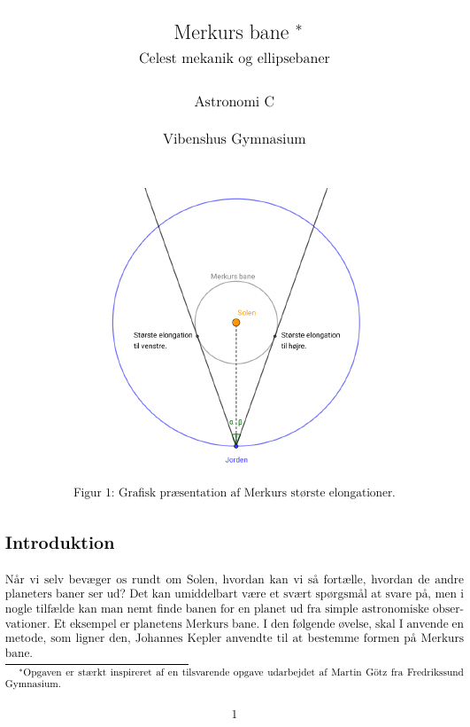
Elongationer
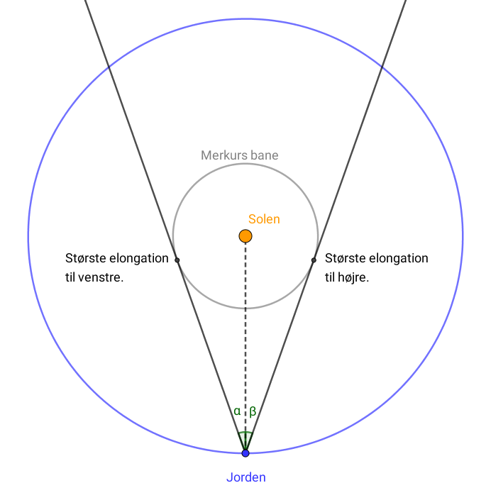
- Største elongation til venstre: Største østlige elongation - Når elongationen optræder efter solnedgang.
- Største elongation til højre: Største vestlige elongation - Når elongationen optræder før solopgang.
Moderne data
| Dato for største elongation | Vinkel mellem Solen og Merkur |
|---|---|
| 19. jan 2017 | \(24^{\circ}\) højre |
| 01. apr 2017 | \(19^{\circ}\) venstre |
| 17. maj 2017 | \(26^{\circ}\) højre |
| 30. jul 2017 | \(27^{\circ}\) venstre |
| 12. sep 2017 | \(18^{\circ}\) højre |
| 24. nov 2017 | \(22^{\circ}\) venstre |
| 01. jan 2018 | \(23^{\circ}\) højre |
| 15. mar 2018 | \(18^{\circ}\) venstre |
| 29. apr 2018 | \(27^{\circ}\) højre |
| 12. jul 2018 | \(26^{\circ}\) venstre |
| 26. aug 2018 | \(18^{\circ}\) højre |
| 06. nov 2018 | \(23^{\circ}\) venstre |
| 15. dec 2018 | \(21^{\circ}\) højre |
| 27. feb 2019 | \(18^{\circ}\) venstre |
| 11. apr 2019 | \(28^{\circ}\) højre |
| 23. jun 2019 | \(25^{\circ}\) venstre |
| 09. aug 2019 | \(19^{\circ}\) højre |
| 20. okt 2019 | \(25^{\circ}\) venstre |
| 28. nov 2019 | \(20^{\circ}\) højre |
Indtegn på figuren
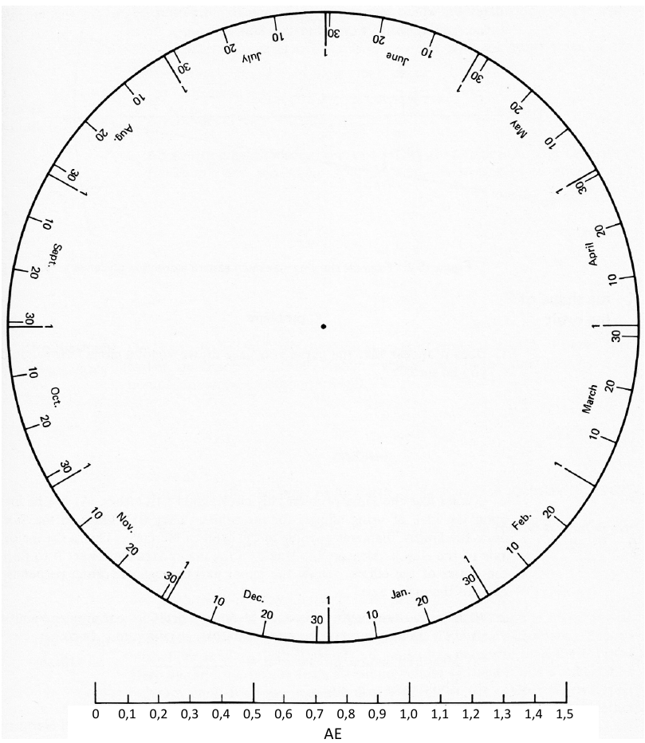
- Indtegn datoen på cirklen periferi.
- Tegn en tynd streg fra Jorden til Solen.
- Afsæt vinklen til højre eller venstre for linjen mellem Solen og Jorden.
- Tegn en tyk linje gennem Jorden og den afsatte vinkel. Før linjen hele vejen igennem den store cirkel.
- Skitsér Merkurs bane.
- Indtegn ellipsens stor- og lilleakse. Bestem størrelserne i AE vha. skalaen.
- Bestem Solens afstand til ellipsens centrum.
- Beregn excentriciten.
- Sammenlign med værdierne i tabellen bagerst i DLU.
Se de nærmere deltaljer i opgaven.
Sir Isaac Newton (1643 - 1727)

- En af de største naturfilosoffer nogensinde!
- Forfatter til "Philosophiae Naturalis Principia Mathematica" (Principia)
- Et af formålene med Principia var at eftervise Keplers love vha Newtons egen mekanik.
Newtons love
I kender dem fra fysik.
Newtons 1. lov
Et legeme som ikke påvirkes af en kraft, eller påvirkes af kræfter, som ophæver hinandens virkning, vil enten ligge stille eller bevæge sig med konstant hastighed.
Newtons 2. lov
Et legeme med massen, \(m\), der påvirkes af en resulterende kraft, \(F_{res}\), vil have en acceleration, som opfylder \[F_{res} = m \cdot a\]
Kan også skrives med vektorer.
\[\sum_i \vec{F}_i = m \cdot \vec{a}\]
Newtons 3. lov
Loven om aktion og reaktion.
Et legeme a som påvirker et andet legeme b med en kraft, vil selv blive påvirket af en lige så stor modsatrettet kraft.
Newtons gravitationslov
Vi kan lige genbruge et slide fra tidligere :)
- Jorden trækker lige så meget i Månen, som Månen trækker i Jorden.
- Kraften de begge trækker med er
\[\boxed{F_G = G \cdot \frac{M \cdot m}{r^2}\,,}\]
- hvor \(G= 6.67 \cdot 10^{-11} Nm^2/kg^2\) (kaldet Newtons gravitationskonstant),
- \(M\) er massen af det store objekt,
- \(m\) er massen af det lille,
- \(r\) er afstanden mellem de to objekter.
2 hurtige opgaver
Beregn "lille" g (den lokale tyngdeacceleration på Jorden) ved hhv ækvator og Nordpolen
Anvend opslag på wikipedia til at finde massen af Jorden og afstandene fra centrum til hhv ækvator og Nordpolen.
Beregn "lille" g på månen
Brug igen wikipedia til at finde relevante informationer.
Hvordan passer det sammen med film af hoppende astronauter på månen?
Potentiel energi
Lokalt nær Jordens (eller en planets/månes) overflade:
\[E_{pot} = m \cdot g \cdot h\]
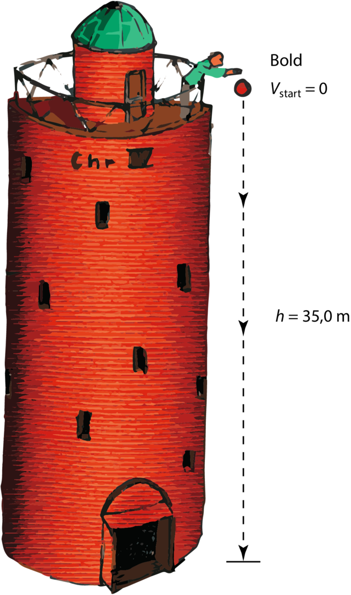
Over store afstande (astronomisk skala) mellem to objekter.
\[E_{pot} = - G \cdot \frac{M\cdot m}{r}\]
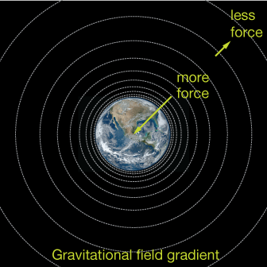
Gravitationel potentiel energi
Over store afstande (astronomisk skala) mellem to objekter.
\[E_{pot} = - G \cdot \frac{M\cdot m}{r}\]
- Læg mærke til det negative fortegn
- Den potentielle energi er nul, når afstanden mellem et objekt og centrallegemet er uendelig stor.
Undvigelseshastighed
Hvor stor en hastighed skal der til for, at et objekt kan unslippe tyngdefeltet fra et centrallegeme?
Undvigelseshastighed
- Objektet skal opnå en potentiel energi på nul.
- Det sker uendeligt langt fra centrallegemet.
- Objektet begynder med en hastighed lig undvigelseshastigheden (\(v_e\)), og opnår en hastighed på nul uendeligt langt fra centrallegemet.
- Objektet starter i afstanden \(r\) fra centrallegemets centrum.
- Energien (den mekaniske energi) er bevaret under hele flyvningen.
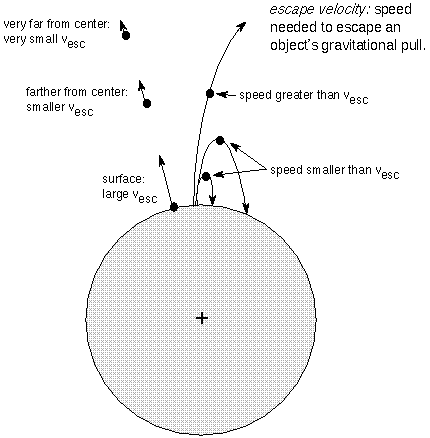
Det giver os følgende ligninger
\[E_\text{mek, før} = E_\text{mek, efter}\]
\[E_\text{kin, før} + E_\text{pot, før} =E_\text{kin, efter} + E_\text{pot, efter}\]
\[\frac{1}{2}m v_e^2 - G \cdot \frac{M \cdot m}{r} = \frac{1}{2} m \cdot 0^2 - G \cdot \frac{M \cdot m}{\infty}\]
\[\frac{1}{2}m v_e^2 - G \cdot \frac{M \cdot m}{r}=0\]
\[\boxed{v_e= \sqrt{\frac{2GM}{r}}}\]
En overvejelse og en hurtig opgave
- Overvej hvorfor,
- NASA opsender raketter ved Cape Canaveral i Florida,
- russerne opsender raketter ved Baikanur i Kasakhstan,
- ESA opsender raketter i fransk Guyana i Sydamerika.
- Beregn undvigelseshastigheden fra Jorden ved hhv ækvator og ved Nordpolen.
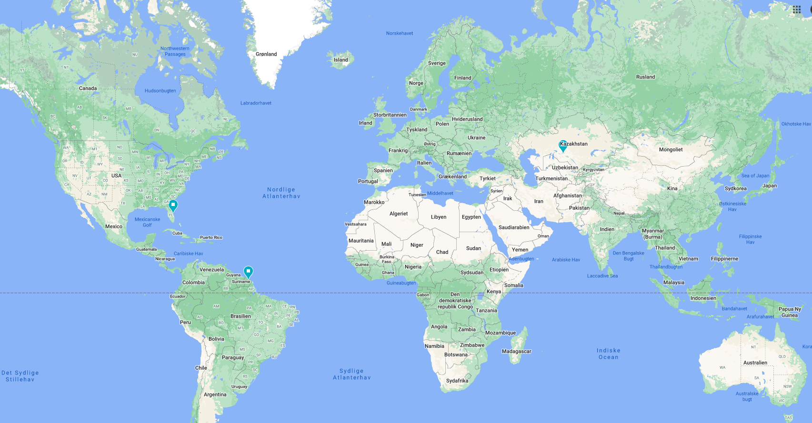
Undvigelseshastigheder og planetatmosfærer
- Hastigheden for molekylerne i en planets atmosfære er fordelt, som på figuren.
- Middelværdien beregnes som \[v_m = \sqrt{\frac{T}{m}} \cdot 158 \,m/s\,,\] hvor \(T\) regnes i kelvin og \(m\) regnes i \(u\) (units).
- Nogle molekyler vil altid bevæge sig hurtigere end \(v_m\). Disser forsvinder og en ny ligevægt indstiller sig.
- En planet kan altså langsomt miste sin atmosfære.
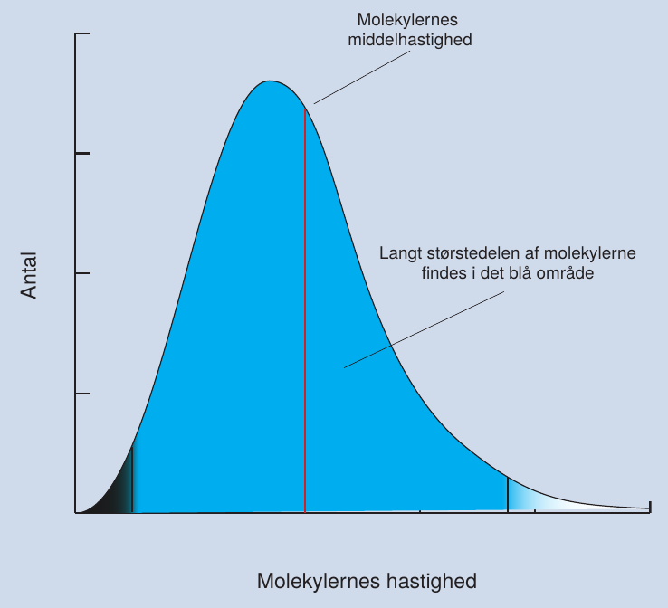
- En stabil atmosfære opstår, når \[ v_m < \frac{1}{6} \cdot v_e\]
3 opgaver
Opgave 6.10
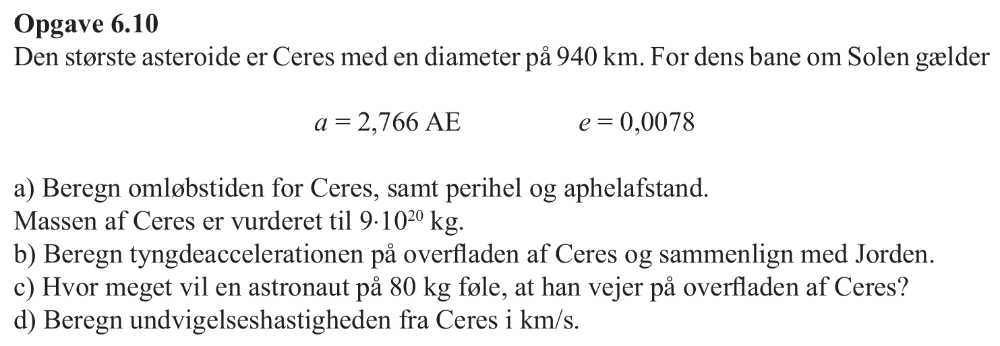
Opgave 7.3
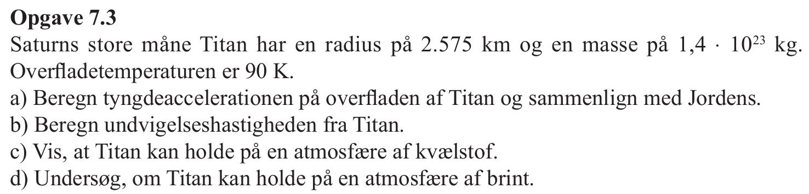
Opgave 7.4
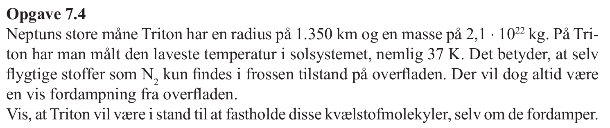
Hohmann-baner
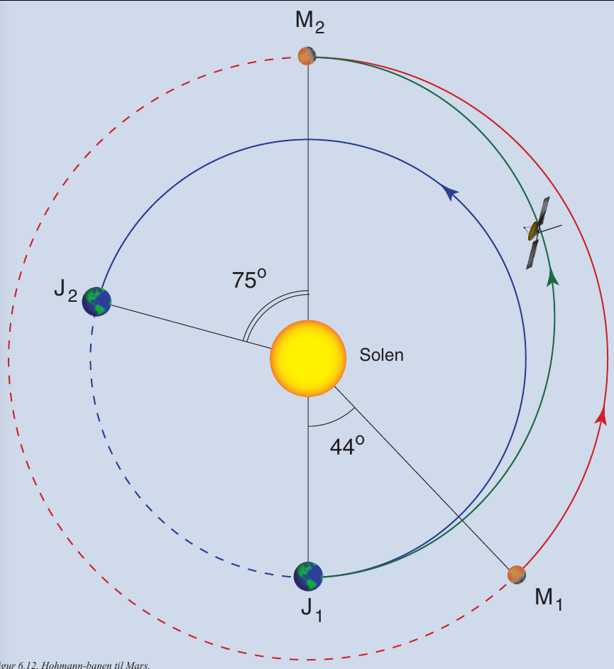
- Den mest energieffektive måde at bevæge sig fra et orbit til et andet.
- Tager dog også længst tid.
- Bevægelse langs en halv ellipsebane.
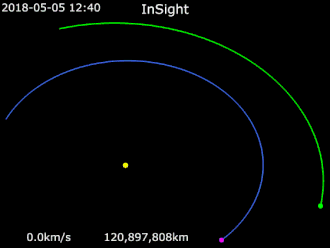
- Fordel jer i mindre grupper og læs tema 6.1 på side 84 i Det Levende Univers.
- Her får I nemlig lidt detaljer til beregningerne.
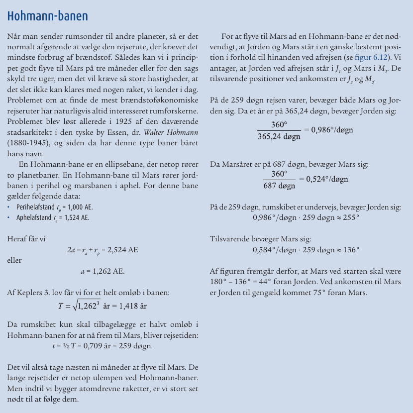
Opgaver
- I skal nu arbejde med opgaverne 6.7, 6.8 og 6.9.
- Mindst en gruppe på hver opgave.
- Til sidst skal hver gruppe præsentere sin opgaveløsning for resten af klassen.
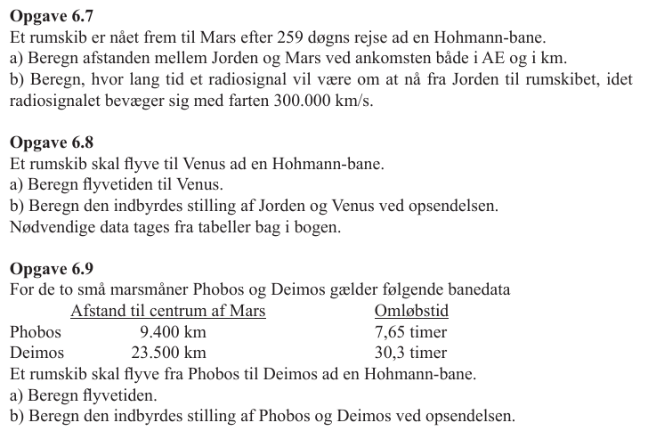
Lagrangepunkter
Hvad er et Lagrangepunkt?
Tema 6.3 s. 88 i DLU
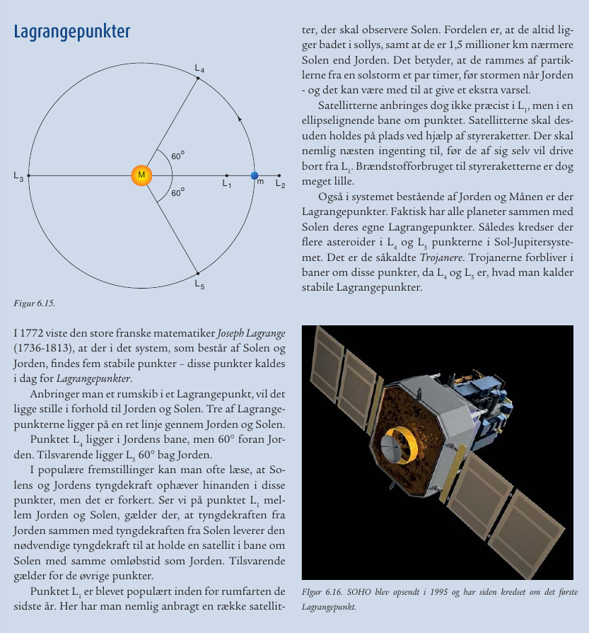
NASA har også noget
https://solarsystem.nasa.gov/resources/754/what-is-a-lagrange-point/
Spørgsmål
I L1 ligger der for tiden 4 menneskeskabte satellitter: SOHO, WIND, ACE og DSCOVR.
- Hvad er disse satellitters missioner?
- Ud i 4 grupper og find oplysningerne om hver jeres satellit.
- Vi mødes igen til en kort plenumpræsentation efterfølgende.
Når ja, i L2 ligger James Webb Space Telescope.
- Hvorfor netop der?
- Hvad er missionen for JWST?
Hvad fandt I frem til?
- SOHO
- WIND
- ACE
- DSCOVR
Hvad kan de ellers bruges til?
Hvad kan I forestille jer, at de forskellige Lagrangepunkter kan bruges til?
- Find sammen i mindre grupper og diskutér spørgsmålet.
- Fælles samtale efterfølgende
Hvilke gode idéer fik I?
Fandt I på nogle nye og epokegørende måder at anvende Lagrangepunkter på?
Var der nogen af jer, som kom frem til:
Kolonisering af Lagrangepunkter
"Restepladser ift rumrejser"
http://www.dept.aoe.vt.edu/~sdross/papers/AmericanScientist2006.pdf
Overvågning af "rumvejret"